11 aistudio.google.com에 접속하여 Google 계정으로 로그인하고 Get API Key로 이동합니다.

처음 사용하시는 분을 위한 단계별 안내입니다.
1 supabase.com에 회원가입을 위해 접속합니다.
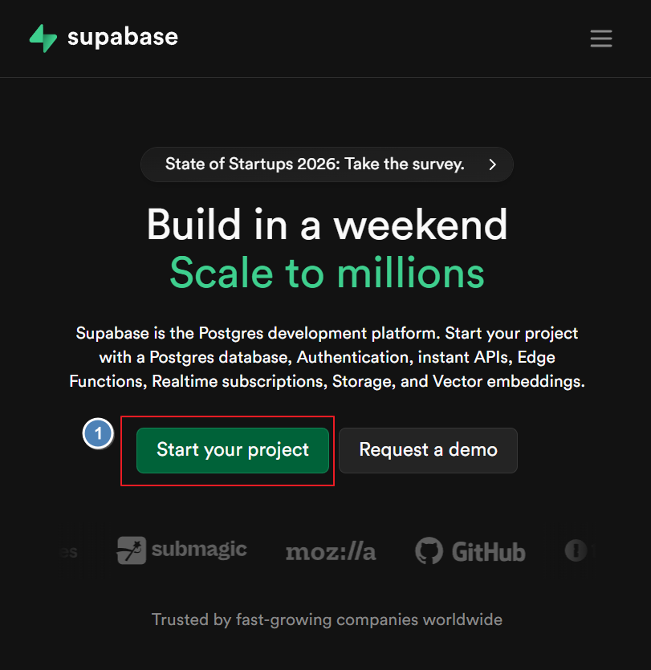
2 Sign up을 눌러 회원가입 화면으로 이동합니다.
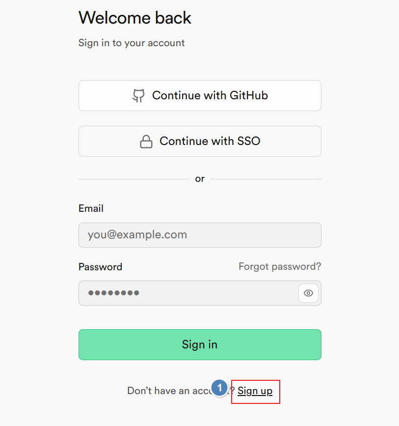
3 구글계정 이메일과 비밀번호를 입력하고 Sign Up 버튼을 누릅니다.
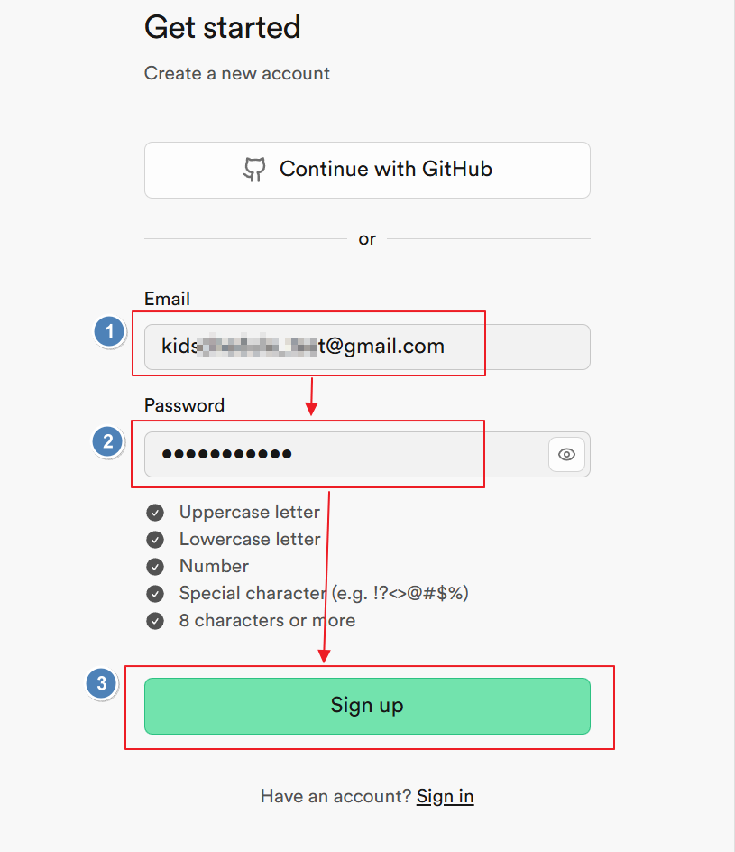
4 Name(원하는 이름 입력), Type(Personal), Plan(Free) 입력 후 Create organization을 누릅니다.
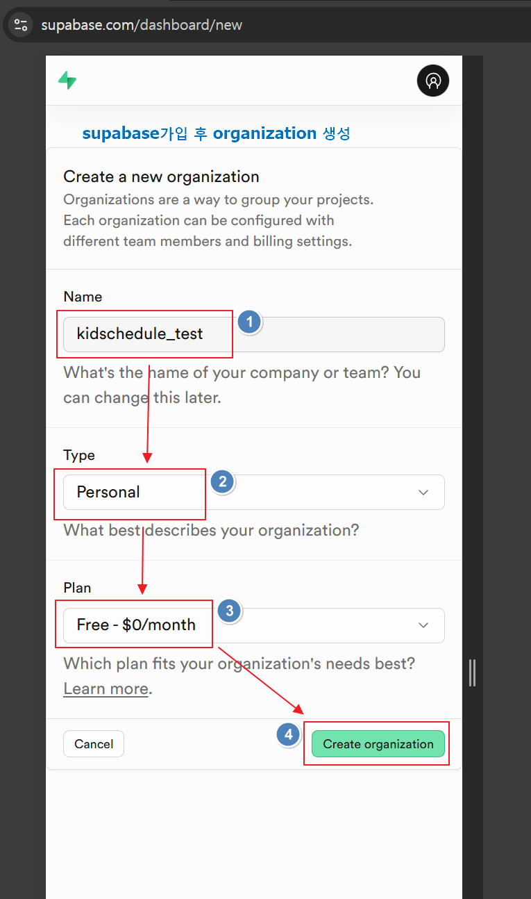
5 프로젝트 이름과 데이터베이스 비밀번호를 입력하고 지역은 Northeast Asia (Seoul)을 선택하고 Create new project를 누릅니다.
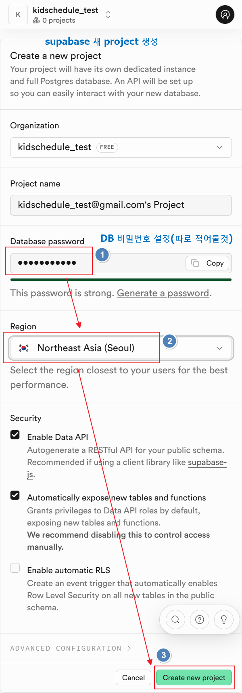
6 Project가 생성되면 Project overview 화면에서 Project URL을 복사해둡니다.
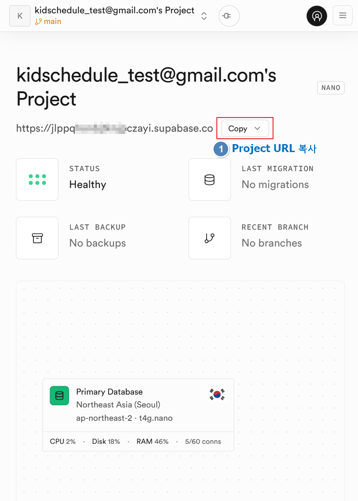
7 Project Settings > API Keys로 이동합니다.
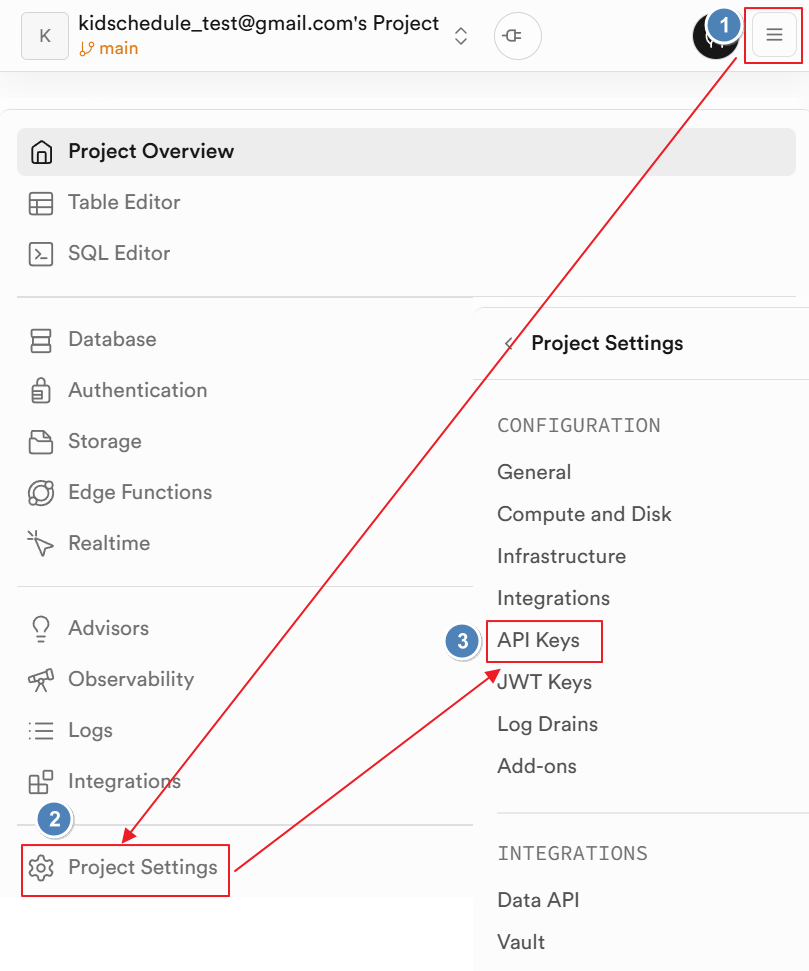
8 Legacy anon, service_role API keys 탭으로 이동 후 anon key를 복사해둡니다.
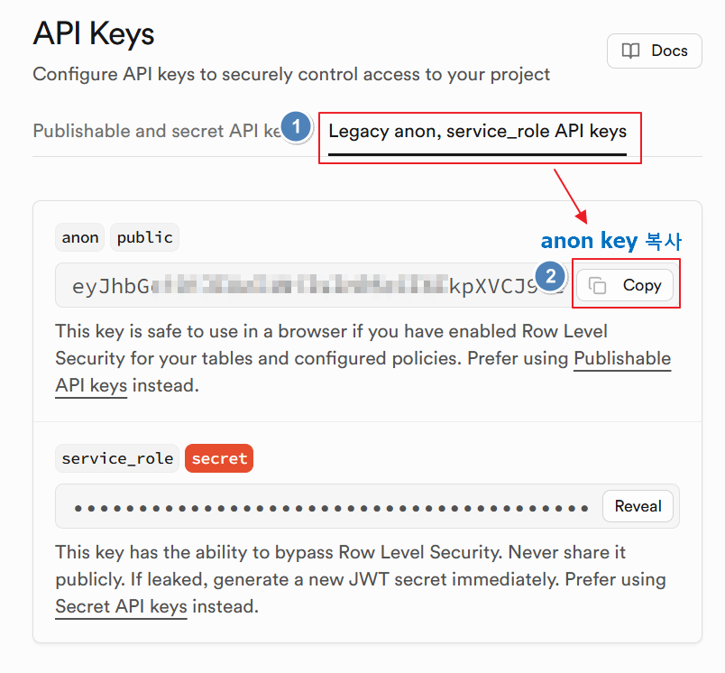
9 Authentication > Sign In / Providers로 이동합니다.
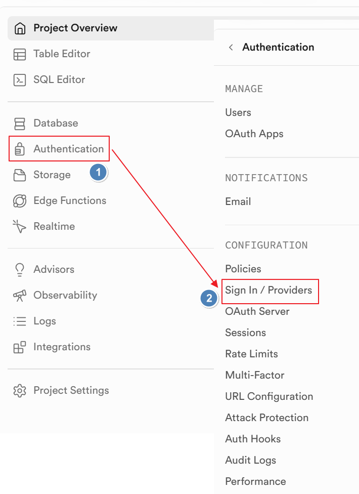
10 Confirm email을 OFF로 설정하고 Save changes를 눌러 설정을 저장합니다.
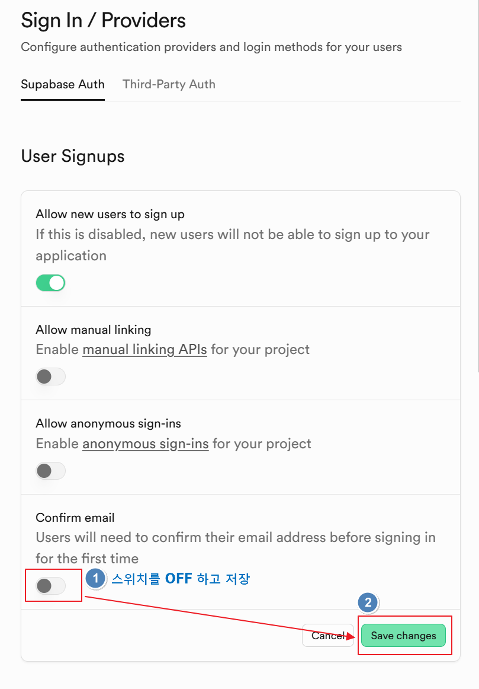
AI 응원 메시지 기능을 사용하려면 설정해 주세요. 없어도 앱은 동작합니다.
11 aistudio.google.com에 접속하여 Google 계정으로 로그인하고 Get API Key로 이동합니다.
12 "API 키 만들기"를 누르고 팝업창이 뜨면 "키 만들기"를 누릅니다.

13 생성된 Gemini API key를 복사해둡니다.

14 앱을 실행하면 서버 설정 화면이 나타납니다. Supabase URL과 anon Key 그리고 Gemini API Key(선택)를 입력하고 저장 및 연결을 누릅니다.
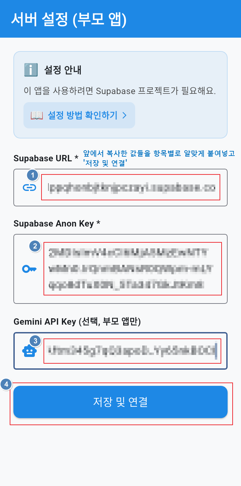
15 데이터베이스 생성이 되지 않아 아래와 같은 화면이 출력되면 "SQL 복사"를 누른 후 "SQL Editor 열기"를 눌러 이동합니다.
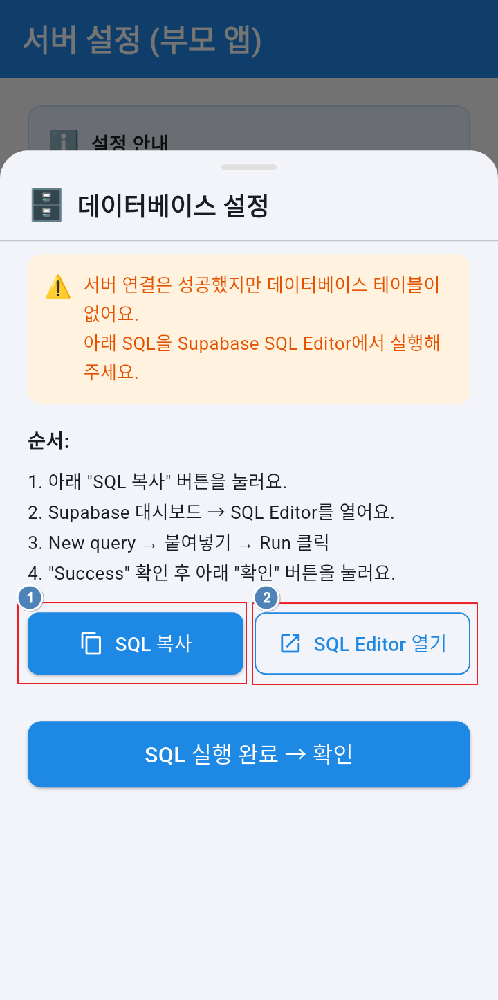
16 supabase 화면으로 이동하면 프로젝트를 눌러 상세화면으로 진입합니다.
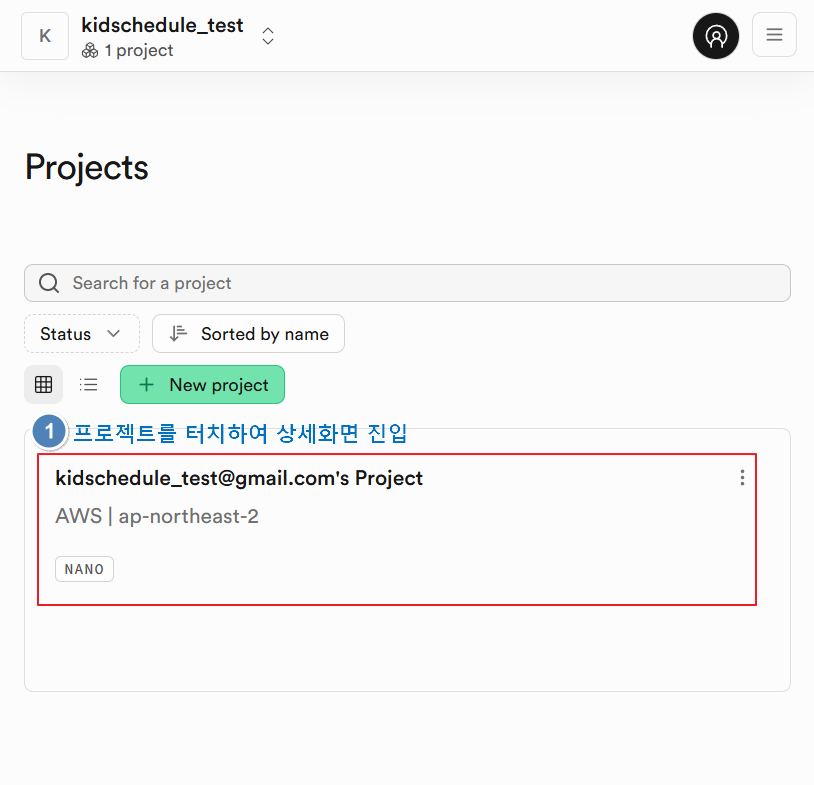
17 SQL 실행을 위해 SQL Editor로 이동합니다.
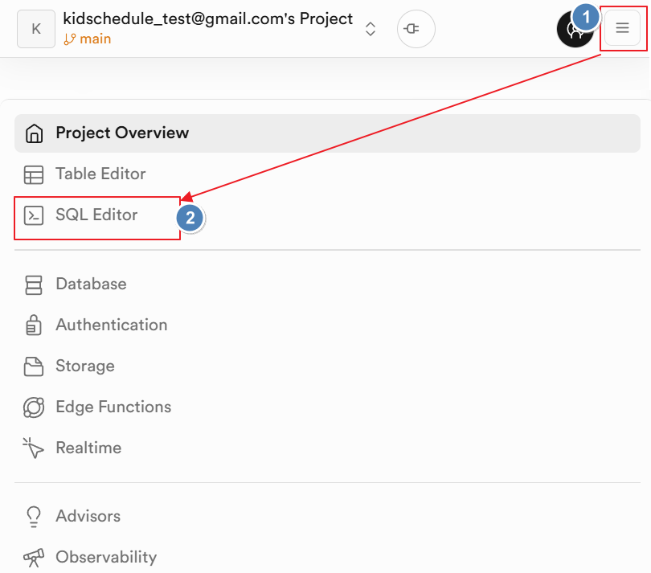
18 복사한 SQL을 아래 화면과 같이 붙여넣고 Run을 눌러 실행합니다.
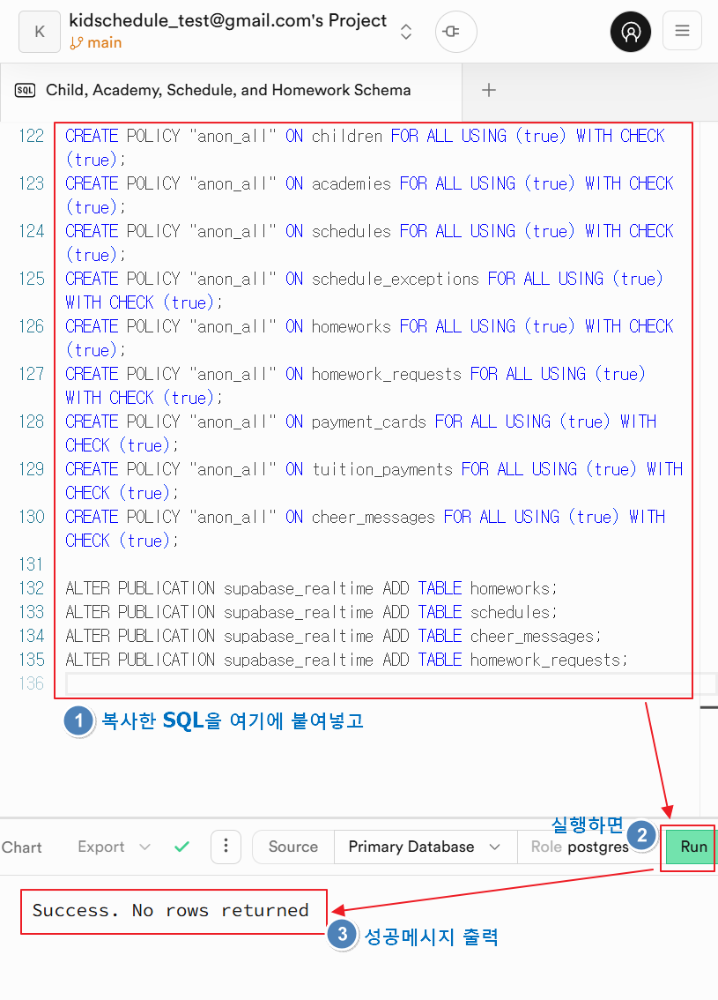
19 다시 키즈 스케줄 앱으로 돌아와서 "SQL실행완료→확인" 버튼을 누릅니다.